01Keyword
02About Me
💼 Career
- 2025.11 ~골든래빗 수험서기획편집팀 · 대리
- 2022.04 ~ 2025.02(주)와이비엠 편집2국 · 대리
- 2021.01 ~ 2022.04자유아카데미 편집부 · 사원
- 2020.09 ~ 2020.12효성ITX(주) 공공데이터 청년인턴
🎓 Education · Certificate
- 2021.02동국대학교 응용통계학과 졸업
- 2020.12ADsP 데이터분석준전문가
✍🏻 Used Tool & Skill
03경력
재직중
(주)골든래빗
수험서기획편집팀 · 대리 — IT 수험서 기획·편집 / CBT·채점서비스 기획·개발
- ADsP, SQLD, 빅데이터분석기사(필기), AICE ASSOCIATE, 리눅스마스터 2급, ITQ OA Master 등 6종 출간
- 계약·기획 단계 포함 20종 이상의 IT 자격증 수험서 라인업 동시 관리
- 도서 구매자 대상 CBT·채점서비스 웹 플랫폼 기획 및 개발
2025.02
(주)와이비엠
편집2국 정보과·실과·초등수학콘텐츠과 · 대리
- 2022 개정 교육과정 고등학교 <데이터 과학> 교과서 책임 편집·기획 (기여도 100%)
- <Brightics Studio와 함께 배우는 데이터 과학> 기획 편집 — 학교 현장 연계 콘텐츠
- 초등학교 실과(5~6학년) 정보 단원, 중·고등 정보·인공지능 기초 교과서 서브 편집 및 저자 관리
- 정보·수학 교과 AIDT(AI 디지털교과서) 개발 참여
- 교정 단계에서 반복되는 수정 사항을 FAQ 문서로 정리해 공유 — 불필요한 반복 논의를 줄여 작업 시간 15% 이상 단축
2022.04
자유아카데미
편집부 통계학 서적 편집자 · 사원
- <기초 통계학>, <실험 설계>, <Montgomery 실험설계 10판> 등 통계·수학·AI 전공서 책임 편집
- IT·인공지능 관련 영문 원서 번역본 검수, 출판 계약·인쇄 검수 관리
2020.12
효성ITX(주)
IT지원부서 · 인턴 (한국수력원자력 공공데이터 청년인턴)
- 공공데이터 개방·정제, 품질 진단, 민원 응대
04Career Portfolio
05프로젝트 상세
CBT·채점서비스 — 기획부터 개발까지
Overview
도서 구매자가 책으로 공부한 내용을 실제 시험처럼 확인할 수 있도록, 온라인 모의고사(CBT)와 실기 자동 채점 서비스를 기획하고 AI 코딩 도구를 활용해 직접 구현·운영하고 있습니다.
Role
- 경쟁 서비스 벤치마킹 → 온라인강의·도서구매·CBT·채점서비스·수험정보·후기·고객센터를 아우르는 사이트 전체 정보구조(IA) 설계
- CBT(객관식 모의고사) 10종 — ADsP, SQLD, 빅데이터분석기사, 워드프로세서, 컴활 1·2급 필기, 정보처리기사, 정보보안기사, 리눅스마스터 2급, 네트워크관리사
- 채점서비스(실기·작업형 자동 채점) 4종 — ITQ(한글/엑셀/파워포인트), 워드프로세서 실기, 컴활 실기(엑셀/액세스)
- 시험 목록·상세·응시 화면의 모바일 대응 전면 재정비 — 페이지마다 제각각이던 기준을 하나의 공용 로직으로 통일
- 응시 결과·오답 분석 화면 개선 — "틀린 문제만 다시 풀기"·"북마크한 문제만 다시 풀기" 원클릭 지원
- 채점 기준 변경 시 과거 응시자 점수를 한 번에 재계산하는 관리자 기능, 카테고리 자동 검증 스크립트, pre-commit lint 도입
Result
AICE 자동 채점기 — 버그를 찾고 고친 이야기
Overview
AICE ASSOCIATE 자동 채점기 초기 버전을 실제 기출 문제·답안 파일로 테스트하던 중, 정답이 포함된 답안조차 전 문항 0점으로 처리되는 치명적인 버그를 발견했습니다.
Role
- 문제지·답지 파일의 셀 구조를 단위별로 직접 분석해 원인 추적
- 셀 탐지 패턴 불일치, 빈칸형 문제 미인식, 정답 키 누락 등 치명적 버그 6건 규명
- 채점 결과 화면 가독성 등 UX 개선 사항 10건 정리
- 즉시 수정 → 기능 추가 → 구조 개선 3단계 우선순위 로드맵 보고서 작성, 실제 서비스 반영
Result
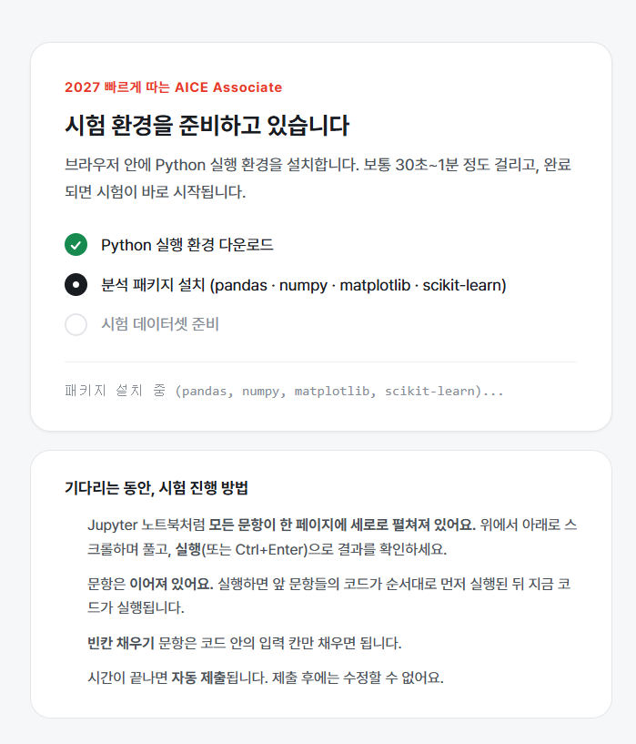
시험 시작 전 브라우저 안에 Python 실행 환경(pandas·numpy·scikit-learn)을 자동 설치하는 준비 화면
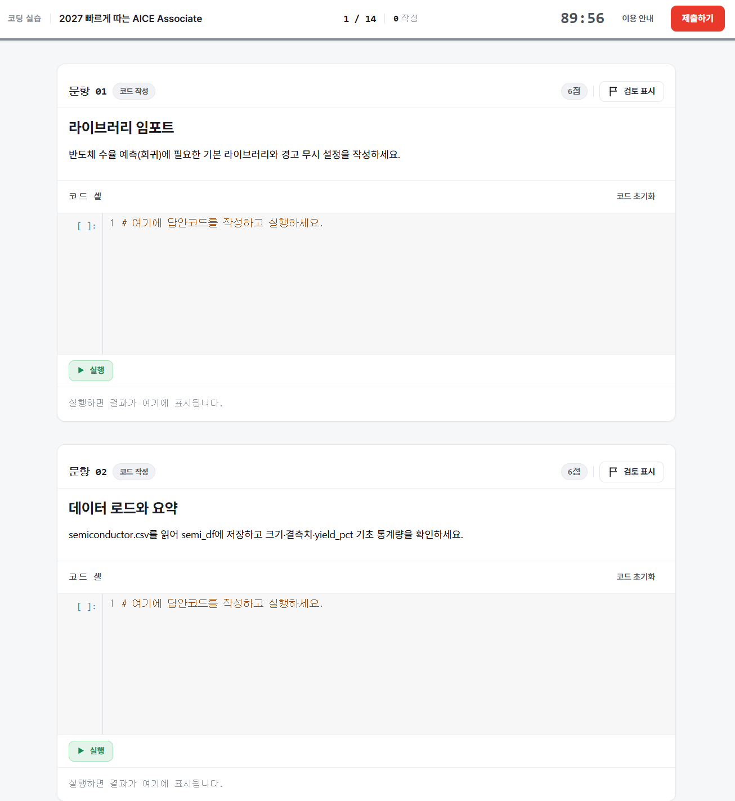
실제 시험과 동일한 Jupyter 노트북 형식의 코딩 실습 응시 화면 — 문항별 코드 셀 실행, 남은 시간, 검토 표시 지원
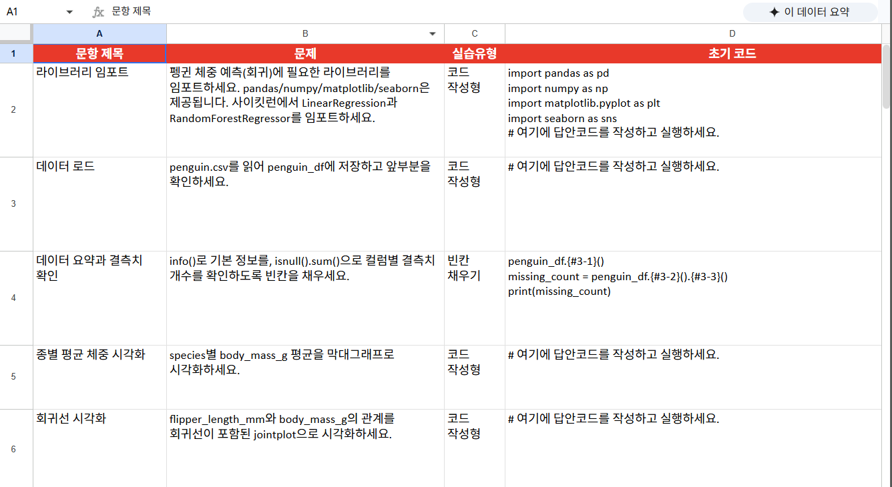
문항 제목·문제·실습유형(코드 작성형/빈칸 채우기)·초기 코드를 정리한 출제 관리 시트 — 채점 키와 문항 구조를 함께 관리
IT 수험서 6종 출간 + 20종 파이프라인
Overview
입사 후 약 8개월 만에 ADsP, SQLD, 빅데이터분석기사(필기), AICE ASSOCIATE, 리눅스마스터 2급, ITQ OA Master 6종을 기획부터 인쇄까지 진행해 출간했습니다. 각 책은 CBT 또는 자동 채점서비스와 연동됩니다.
Role
- 기획 → 원고 → 조판대조 → 1교 → 2교 → 3교 → 리파인 표준 편집 프로세스를 직접 문서화해 사내 가이드로 정착
- 저자 섭외·요청사항 관리, 원고 피드백 루프, 베타테스터 모집·검토 운영
- 마케팅 — 유튜브 크리에이터 협업, 블로그 서평단, SNS 캠페인 기획 및 실행
Result
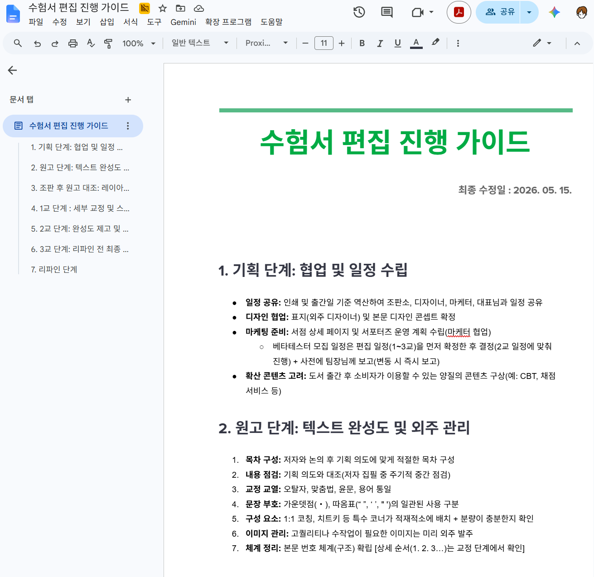
직접 문서화한 수험서 편집 진행 가이드 — 기획·원고·조판대조·1~3교·리파인 7단계별 체크리스트
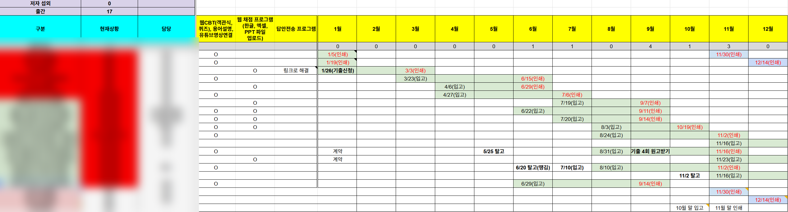
전체 라인업 연간 진행 현황표 — 종별 CBT·채점 연동 여부와 탈고·입고·인쇄 일정을 한눈에 관리 (도서명·담당자는 비공개 처리)
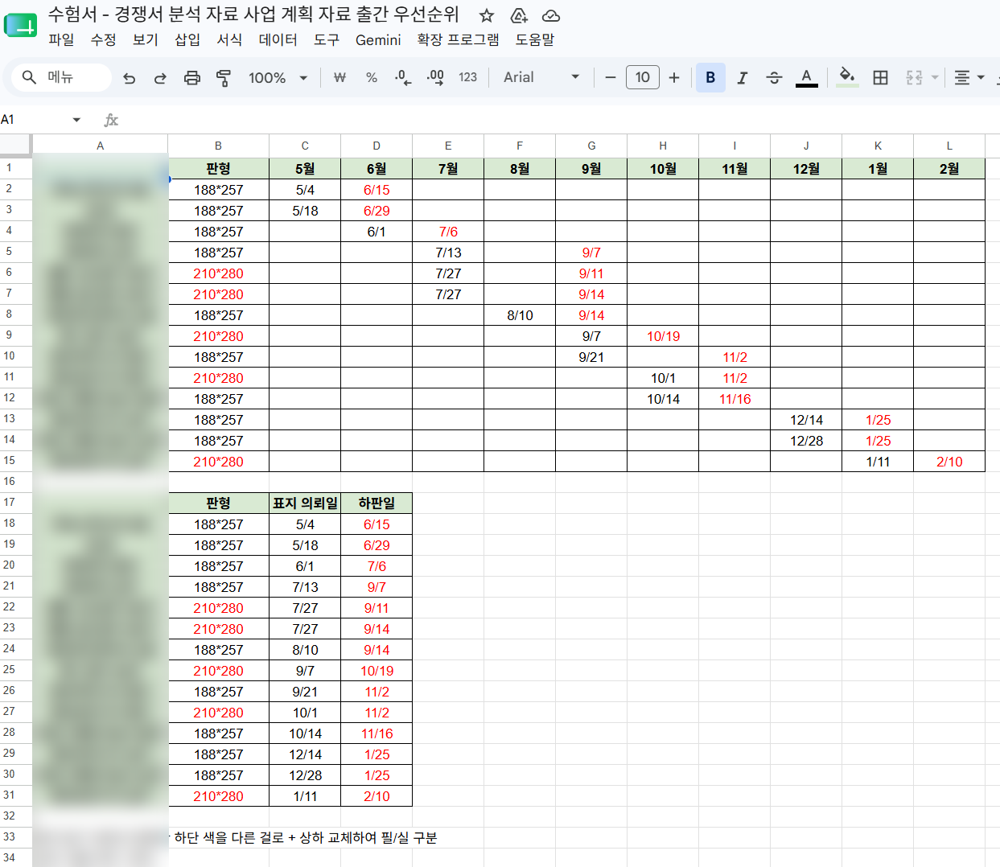
출간 우선순위와 판형·표지 의뢰일·하판일 관리 시트 (도서명은 비공개 처리)
2022 개정 교육과정 고등학교 <데이터 과학>
Overview
2022 개정 교육과정에 새롭게 도입된 고등학교 데이터 과학 교과서의 책임 편집을 담당해 교육과정 분석부터 최종 인정 도서 제출까지 전 과정을 주도적으로 수행했습니다.
Role
- 신설 교과목 특성상 철저한 교육과정 분석 및 유사 교과용도서 탐색
- 교과서 체제 구상·내지 디자인 발주, 단원 편제(안)·집필 세목(안) 작성 후 집필진 협의
- 원고 편집·삽화 발주, 삽화·컷·조판소 등 외주 인력 관리
- 지역별 현장 검토·전문 위원 검토 회의 준비, 인정 도서 제출 제반 서류, 지도서·전자저작물 후속 작업
- 교과서 소개 PT·홍보 자료 제작, 집필진 관리
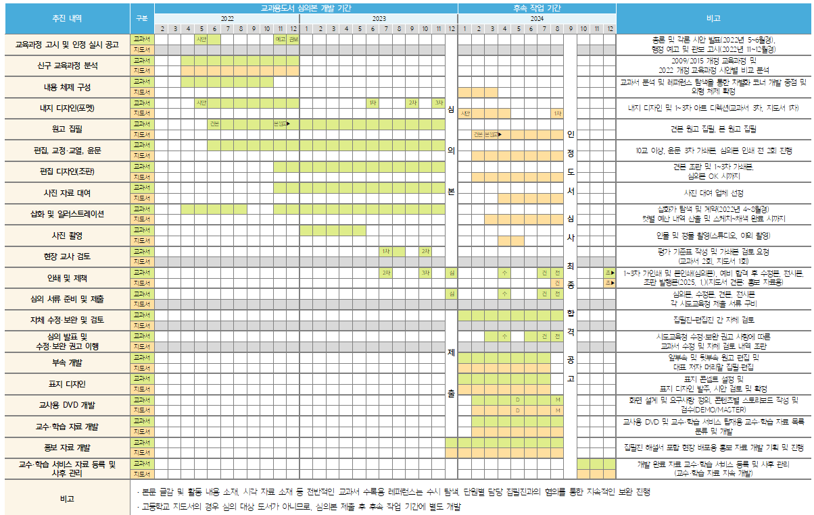
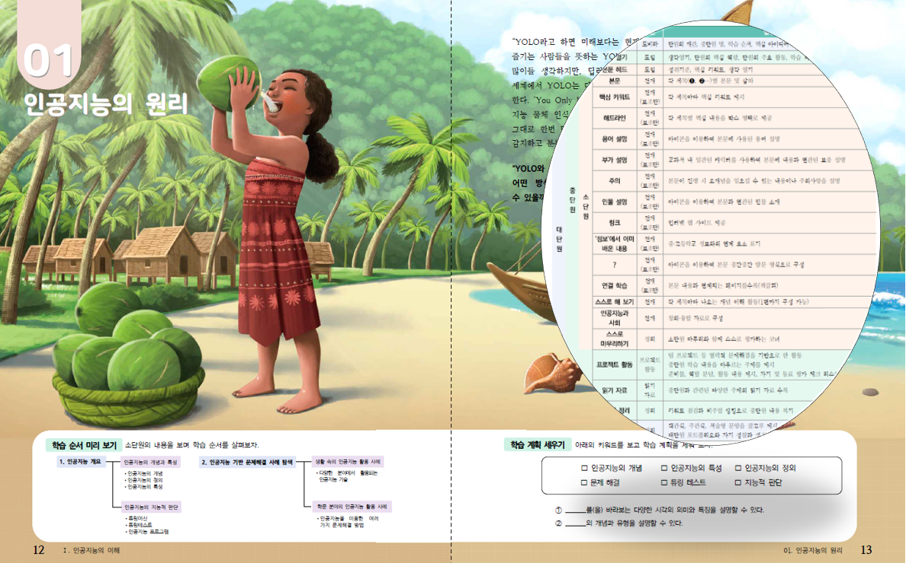
내지 디자인 발주를 위해 직접 작성한 교과서 체제 문서
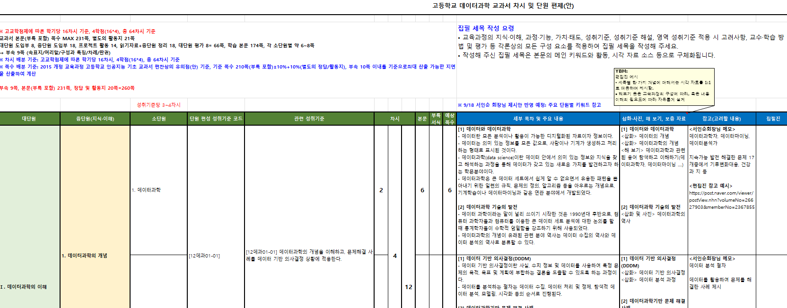
단원 편제·집필 세목(안) 작성 후 집필진과 논의
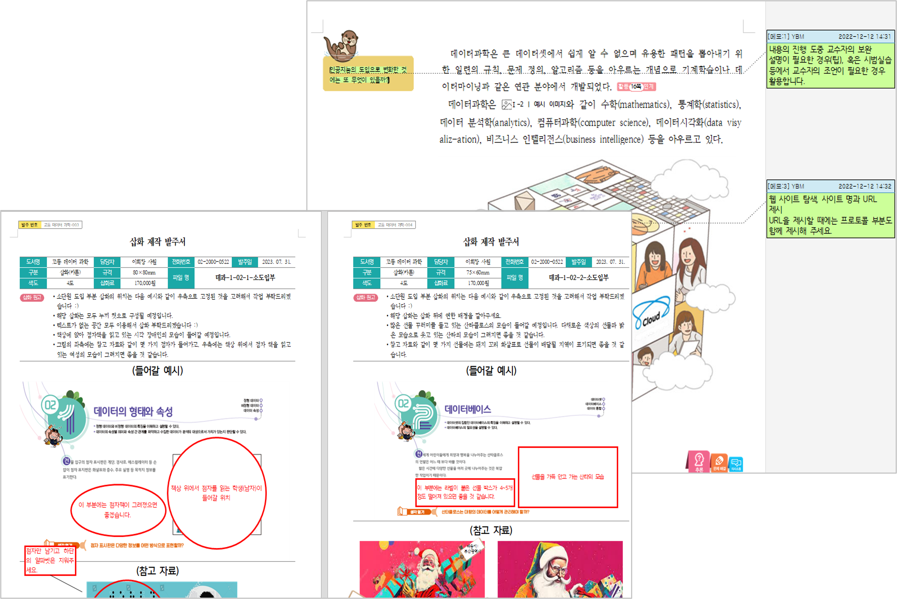
원고 편집 및 삽화 발주
Result
<Brightics Studio와 함께 배우는 데이터 과학>
Overview
고등학교 <데이터 과학> 교과서의 판매 기여와 홍보를 위해 기획한 단행본입니다. 교육용 논코딩 도구로 많이 쓰이는 Orange가 외국산 도구라는 언어적 한계가 있고, 교과용도서에 국내 개발 자료 활용이 권장되는 흐름에 맞춰 'Brightics Studio' 학습서 시장을 선점하고자 기획했습니다.
Role
- 기획안 작성 전담 — 교과서와 연계한 시장성 분석 포함
- 단행본 체제 및 초안 작성 전담
- 외주 편집 인력 관리 — 계약 기간 내 활용 계획 수립, 편집 규칙·디자인 틀 사전 숙지, 크로스 체크와 내용 검수, 전체 맥락과 일관성을 고려한 피드백·가이드라인 제시
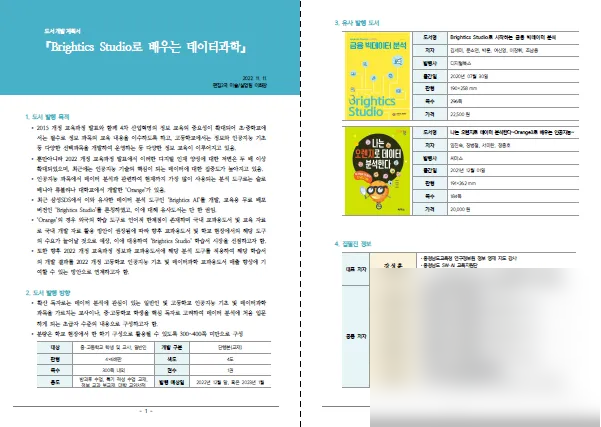
직접 작성한 단행본 기획안
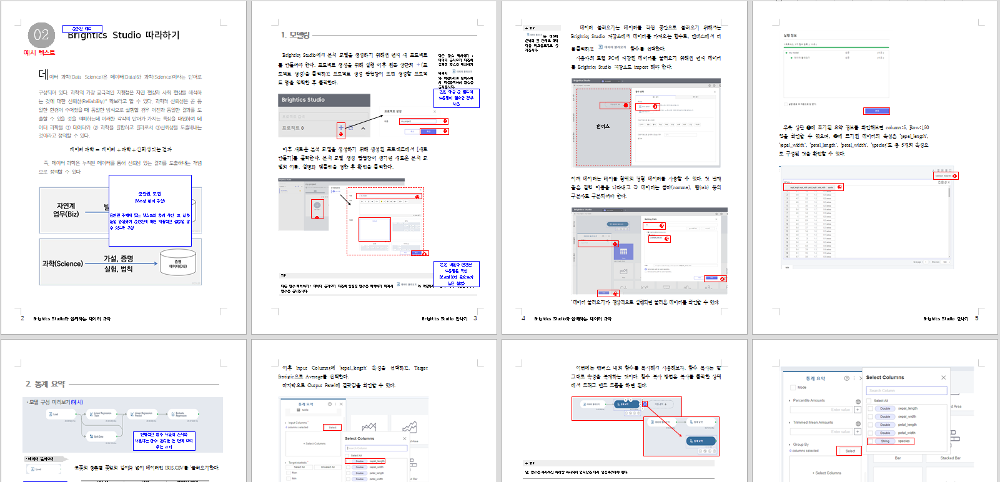
단행본 체제 및 초안 작성
Result
2022 개정 교육과정 초등학교 실과(5~6학년군)
Overview
초등학교 검정 교과서 개발 사업에 참여해 5~6학년군 실과 교과서의 정보 파트 개발을 담당했습니다. 2022 개정 교육과정에 맞춰 교과서와 지도서를 개발하고 검정 심사를 위한 제반 업무를 수행했으며, 학생들의 디지털 리터러시 함양을 위한 콘텐츠 개발에 주력했습니다.
Role
- 5·6학년 정보 파트 교과서·지도서 전반 담당, 원고 편집
- 내지 디자인 브리프·발주서 작성
- 정보 파트 자문위원 모집, 교수·학습 자료 개발 저자 탐색
- 외주 인력 관리 및 계약서 작성, 검정 교과서 제출 제반 서류 작성
Result
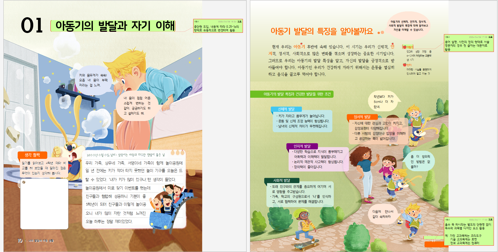
교과서 내지 교정 지면 — 도입 구성·용어 설명 방식 등 편집 방향을 코멘트로 조율
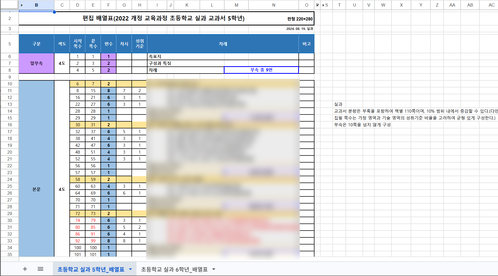
직접 관리한 편집 배열표 — 단원별 쪽수·차시·성취기준을 한눈에 관리
교실혁명 선도교사 양성 연수 수행기관 공모 신청
Overview
한국교육학술정보원(KERIS)의 '교실혁명 선도교사 양성 연수 수행기관' 사업 참여를 위한 제반 서류 작성 및 발표 자료 제작을 담당했습니다.
Role
- 연수 환경 사전 점검 사항을 포함한 전체 연수 환경 기술 — 원격 연수와 1·3·6 권역별 현장 연수 운영 일정, 원격 연수 장비 현황 파악
- 연수생 사전 안내부터 결과 처리까지 단계별 운영 계획 작성 — 분반·모둠 구성(교과·학교급 고려), 연수 활동 지원, 이수증 부여, 산출물·만족도 관리
- 공모 발표 자료 제작
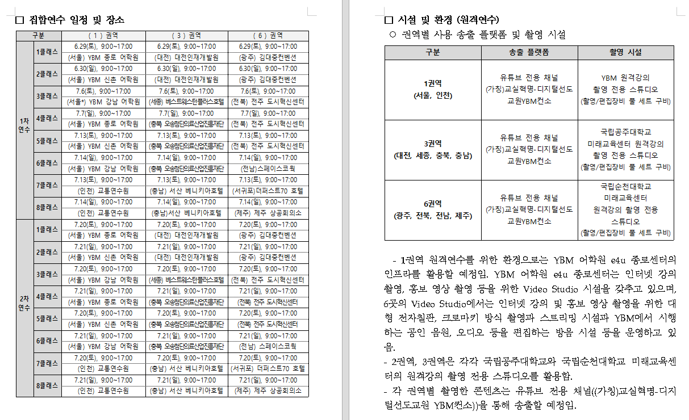
권역별 집합연수 일정과 원격연수 송출 플랫폼·촬영 시설 현황 정리
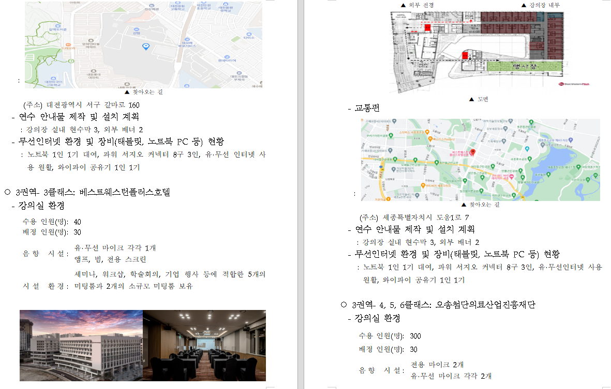
제안서에서 연수 환경을 지도·도면·사진으로 구체적으로 제시
통계·수학·AI 전공서 책임 편집
Overview
동국대학교 응용통계학과 전공 지식을 살려 통계·수학·AI 분야 전공 서적을 책임 편집했습니다. 원고부터 인쇄 직전 검수까지 출간 전 과정을 담당했습니다.
Role
- <기초 통계학>, <실험 설계>, <통계학 개론>, <품질관리>, <탐색적 데이터 분석> 등 통계학과 전공 서적 책임 편집
- <통계 수학>, <제약 수학>, <선형대수의 이해> 등 수학 서적 책임 편집
- <Stable Baseline을 활용한 강화 학습>, <텐서플로와 케라스를 이용한 딥러닝> 등 AI 실습서 편집
- <Montgomery 실험설계와 분석 제10판> 등 영문 원서 번역본 편집 — 원문 대조 검수
- 재단·표지·본문 인쇄 상태 검수, 출판 계약서 관리
06How I Work
- 데이터를 기반으로 한 합리적인 의사 결정을 내립니다.
- 갑작스러운 변동 사항이 생겨도 유연하게 대처합니다.
- 업무 데드라인은 반드시 지킵니다.
- 팀원과 업무를 투명하게 공유하고 팀의 문제는 함께 해결합니다.
- 결과물은 실제 데이터로 끝까지 검증한 뒤에 내놓습니다.